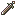
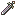
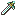
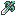
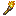

武器与道具
价格是商店买价（单次价格 × 耐久），「—」表示不能买卖。武器等级是装备需要的熟练度，「专用」的只有该角色能用。鼠标移到特效上可以看到具体职业。点表头可以排序。
索引
剑枪斧弓理魔法光魔法暗魔法杖道具吐息
| 名称 | 等级 | 威力 | 命中 | 必杀 | 重量 | 射程 | 耐久 | 价格 | 特效 | 能力加成 | 说明 |
|---|
| 铁剑 | E | 5 | 90 | 0 | 5 | 1 | 46 | 460 | | | |
| 细身剑 | E | 3 | 100 | 5 | 2 | 1 | 30 | 480 | | | |
| 钢剑 | D | 8 | 75 | 0 | 10 | 1 | 30 | 600 | | | |
| 银剑 | A | 13 | 80 | 0 | 8 | 1 | 20 | 1500 | | | |
 铁之大剑 | D | 9 | 70 | 0 | 12 | 1 | 35 | 980 | | | |
 钢之大剑 | C | 11 | 65 | 0 | 14 | 1 | 25 | 1250 | | | |
 银之大剑 | A | 14 | 60 | 0 | 13 | 1 | 15 | 1800 | | | |
| 毒剑 | D | 3 | 70 | 0 | 6 | 1 | 40 | — | | | 可以使敌人中毒的剑 |
| 突刺剑 | 艾利乌德专用 | 7 | 95 | 10 | 5 | 1 | 40 | 6000 | 骑兵、重甲 | | 对骑兵和重装系兵种有特效 |
| 玛尼・卡缇 | 琳专用 | 8 | 80 | 20 | 3 | 1 | 45 | — | 骑兵、重甲 | | 对骑兵和重装系兵种有特效 |
| 勇者之剑 | B | 9 | 75 | 0 | 12 | 1 | 30 | 3000 | | | 可以2回攻击的剑 |
| 倭刀 | D | 8 | 75 | 35 | 5 | 1 | 20 | 1200 | | | 容易发动必杀的东方之剑 |
| 必杀刃 | C | 9 | 75 | 30 | 7 | 1 | 20 | 1300 | | | 容易发动必杀的剑 |
| 破甲剑 | D | 8 | 80 | 0 | 11 | 1 | 18 | 1260 | 重甲 | | 对重装系兵种有特效的剑 |
 斩龙剑 | C | 7 | 75 | 0 | 5 | 1 | 20 | 3000 | 龙 | | 对龙系有特效的剑 |
| 光之剑 | C | 9 | 70 | 0 | 9 | 1～2 | 25 | 1250 | | | 可以间接攻击的光之魔法剑 |
| 卢尼之剑 | A | 12 | 65 | 0 | 11 | 1～2 | 15 | 3300 | | | 可以间接攻击的暗之魔法剑 |
| 破枪剑 | C | 9 | 75 | 5 | 9 | 1 | 15 | 1800 | | | 遇枪则强，遇斧则弱的剑 |
| 长柄刀 | D | 6 | 85 | 0 | 11 | 1 | 18 | 1260 | 骑兵 | | 对骑兵兵种有特效的剑 |
| {军师名}之剑 | E | 5 | 90 | 0 | 5 | 1 | 60 | — | | | 军师之剑 |
| 幽兰戴尔 | 艾利乌德专用 | 17 | 90 | 0 | 16 | 1 | 20 | — | 龙 | 力量+5 | 神将器 烈火之剑 力＋5 |
| 索尔・卡缇 | 琳专用 | 12 | 95 | 25 | 14 | 1 | 30 | — | 龙 | 魔防+5 | 对龙系有特效的剑 |
| 帝王之剑 | S | 20 | 85 | 0 | 9 | 1 | 25 | 15000 | | | 追求极限之人所使用的剑 |
| 风之剑 | B | 9 | 70 | 0 | 9 | 1～2 | 40 | 8000 | 飞行 | | 可以间接攻击的理之魔法剑 |
| 名称 | 等级 | 威力 | 命中 | 必杀 | 重量 | 射程 | 耐久 | 价格 | 特效 | 能力加成 | 说明 |
|---|
| 铁枪 | E | 7 | 80 | 0 | 8 | 1 | 45 | 360 | | | |
| 细枪 | E | 4 | 85 | 5 | 4 | 1 | 30 | 450 | | | |
| 钢枪 | D | 10 | 70 | 0 | 13 | 1 | 30 | 480 | | | |
| 银枪 | A | 14 | 75 | 0 | 10 | 1 | 20 | 1200 | | | |
| 毒枪 | E | 4 | 65 | 0 | 8 | 1 | 40 | — | | | 可以使敌人中毒的枪 |
| 勇者之枪 | B | 10 | 70 | 0 | 14 | 1 | 30 | 7500 | | | 可以2回攻击的枪 |
| 必杀枪 | C | 10 | 70 | 30 | 9 | 1 | 20 | 1200 | | | 容易发动必杀的枪 |
| 刺马枪 | D | 7 | 70 | 0 | 13 | 1 | 16 | 1040 | 骑兵 | | 对骑兵兵种有特效的枪 |
| 投枪 | E | 6 | 65 | 0 | 11 | 1～2 | 20 | 400 | | | 可以间接攻击的投枪 |
| 锁链枪 | B | 12 | 70 | 5 | 10 | 1～2 | 15 | 9000 | | | 可进行间接攻击的强力投枪 |
| 破斧枪 | C | 10 | 70 | 5 | 11 | 1 | 15 | 1950 | | | 遇斧则强，遇剑则弱的枪 |
| 锁链枪 | B | 12 | 70 | 5 | 10 | 1～2 | 15 | 1500 | | HP+17 力量+5 技术+4 速度+9 守备+4 魔防+14 | 可进行间接攻击的强力投枪 |
| {军师名}之枪 | E | 7 | 80 | 0 | 8 | 1 | 60 | — | | | 军师之枪 |
| 王者之枪 | S | 21 | 80 | 0 | 11 | 1 | 25 | 15000 | | | 追求极限之人所使用的枪 |
| 刺突枪 | D | 9 | 70 | 0 | 14 | 1 | 16 | 1200 | 重甲 | | 对重装系兵种有特效的枪 |
| 短枪 | C | 9 | 60 | 0 | 12 | 1～2 | 18 | 900 | | | 可以间接攻击的投枪 |
| 名称 | 等级 | 威力 | 命中 | 必杀 | 重量 | 射程 | 耐久 | 价格 | 特效 | 能力加成 | 说明 |
|---|
| 铁斧 | E | 8 | 75 | 0 | 10 | 1 | 45 | 270 | | | |
| 钢斧 | E | 11 | 65 | 0 | 15 | 1 | 30 | 360 | | | |
| 银斧 | A | 15 | 70 | 0 | 12 | 1 | 20 | 1000 | | | |
| 毒斧 | D | 4 | 60 | 0 | 10 | 1 | 40 | — | | | 可以使人中毒的斧 |
| 勇者之斧 | B | 10 | 65 | 0 | 16 | 1 | 30 | 2250 | | | 可以2回攻击的斧 |
| 必杀斧 | C | 11 | 65 | 30 | 11 | 1 | 20 | 1000 | | | 容易发动必杀的斧 |
| 战戟 | D | 10 | 60 | 0 | 15 | 1 | 18 | 810 | 骑兵 | | 对骑兵兵种有特效的斧 |
| 战锤 | D | 10 | 55 | 0 | 15 | 1 | 20 | 800 | 重甲 | | 对重装系兵种有特效的斧 |
| 恶魔之斧 | E | 18 | 55 | 0 | 18 | 1 | 20 | 900 | | | 使用不慎可能导致自身受伤 |
| 投斧 | E | 7 | 60 | 0 | 12 | 1～2 | 20 | 300 | | | 可间接攻击的投斧 |
| 回旋斧 | A | 13 | 65 | 0 | 14 | 1～2 | 15 | 3000 | | | 可间接攻击的强力投斧 |
| 破剑斧 | C | 11 | 65 | 5 | 13 | 1 | 15 | 2100 | | | 遇剑则强，遇枪则弱的斧 |
| 弑剑斧 | C | 11 | 80 | 5 | 13 | 1 | 20 | 2000 | 剑系步兵 | | 对剑系步兵特效的破剑斧 |
| 龙斧 | C | 10 | 60 | 0 | 11 | 1 | 40 | 6000 | 龙 | | 对龙系有特效的斧 |
| {军师名}之斧 | E | 8 | 75 | 0 | 10 | 1 | 60 | — | | | 军师之斧 |
| 阿尔玛兹 | 赫克托耳专用 | 18 | 85 | 0 | 18 | 1 | 25 | — | 龙 | 守备+5 | 神将器 天雷之斧 守备＋5 |
| 群狼之灾 | 赫克托耳专用 | 10 | 75 | 5 | 10 | 1 | 30 | 6000 | 骑兵、重甲 | | 对骑兵和重装系兵种有特效 |
| 暴君之斧 | S | 22 | 75 | 0 | 13 | 1 | 25 | 15000 | | | 追求极限之人所使用的斧 |
| 名称 | 等级 | 威力 | 命中 | 必杀 | 重量 | 射程 | 耐久 | 价格 | 特效 | 能力加成 | 说明 |
|---|
| 铁弓 | E | 6 | 85 | 0 | 5 | 2 | 45 | 540 | 飞行 | | |
| 钢弓 | D | 9 | 70 | 0 | 9 | 2 | 30 | 720 | 飞行 | | |
| 银弓 | A | 13 | 75 | 0 | 6 | 2 | 20 | 1600 | 飞行 | | |
| 毒弓 | D | 4 | 65 | 0 | 5 | 2 | 40 | — | 飞行 | | 可以使敌人中毒的弓 |
| 必杀弓 | C | 9 | 75 | 30 | 7 | 2 | 20 | 1400 | 飞行 | | 容易发动必杀的弓 |
| 勇者之弓 | B | 10 | 70 | 0 | 12 | 2 | 30 | 7500 | 飞行 | | 可以2回攻击，对飞行系特效 |
| 短弓 | D | 5 | 85 | 10 | 3 | 2 | 22 | 1760 | 飞行 | | 容易发动必杀的东方之弓 |
| 长弓 | D | 5 | 65 | 0 | 10 | 2～3 | 20 | 2000 | 飞行 | | 可以隔3格攻击敌人的弓 |
| 长弩 | E | 8 | 70 | 0 | 20 | 3～10 | 5 | — | 飞行 | | 可远距离攻击的弓架发射台 |
| 钢铁弩 | E | 13 | 60 | 0 | 20 | 3～15 | 5 | — | 飞行 | | 可超远距离攻击的弓架发射台 |
| 必杀弩 | E | 12 | 65 | 10 | 20 | 3～10 | 5 | — | 飞行 | | 容易发动必杀的弓架发射台 |
| {军师名}之弓 | E | 6 | 85 | 0 | 5 | 2 | 60 | — | | | 军师之弓 |
| 利安弗雷切 | S | 20 | 80 | 0 | 7 | 2 | 25 | 15000 | 飞行 | | 追求极限之人所使用的弓 |
| 名称 | 等级 | 威力 | 命中 | 必杀 | 重量 | 射程 | 耐久 | 价格 | 特效 | 能力加成 | 说明 |
|---|
| 火炎 | E | 5 | 90 | 0 | 4 | 1～2 | 40 | 560 | | | |
| 闪电 | D | 8 | 80 | 5 | 6 | 1～2 | 35 | 700 | | | |
| 地狱业火 | C | 10 | 85 | 0 | 10 | 1～2 | 30 | 1200 | | | |
| 雷暴 | B | 12 | 60 | 0 | 20 | 3～10 | 5 | 2500 | | | 远距离攻击 |
| 终末之冬 | A | 13 | 80 | 0 | 12 | 1～2 | 20 | 6000 | | | |
| 弗尔布雷斯 | 阿特斯专用 | 14 | 85 | 5 | 11 | 1～2 | 20 | — | 龙 | 幸运+5 | 神将器 业火之理 幸运＋5 |
| 神之风刃 | S | 18 | 90 | 10 | 13 | 1～2 | 25 | 25000 | | | |
| 名称 | 等级 | 威力 | 命中 | 必杀 | 重量 | 射程 | 耐久 | 价格 | 特效 | 能力加成 | 说明 |
|---|
| 闪光 | E | 4 | 95 | 5 | 6 | 1～2 | 35 | 630 | | | |
| 阳光 | D | 6 | 90 | 8 | 8 | 1～2 | 30 | 900 | | | |
| 神圣之光 | C | 8 | 85 | 10 | 12 | 1～2 | 25 | 2500 | | | |
| 净化之光 | B | 10 | 75 | 5 | 20 | 3～10 | 5 | 3000 | | | 远距离攻击 |
| 光轮 | A | 12 | 85 | 15 | 15 | 1～2 | 20 | 8000 | | | |
| 露丝 | S | 16 | 95 | 25 | 16 | 1～2 | 25 | 30000 | | | |
| 亚利艾尔 | S | 15 | 90 | 5 | 14 | 1～2 | 20 | — | 龙、灾祸招致者 | 魔防+5 | 神将器 至高之光 魔防＋5 |
| 名称 | 等级 | 威力 | 命中 | 必杀 | 重量 | 射程 | 耐久 | 价格 | 特效 | 能力加成 | 说明 |
|---|
| 熔流 | D | 7 | 80 | 0 | 8 | 1～2 | 45 | 900 | | | |
| 月光 | C | 0 | 95 | 20 | 12 | 1～2 | 35 | 5250 | | | 可以无视敌人的魔防 |
| 吸星术 | C | 10 | 70 | 0 | 14 | 1～2 | 20 | 3200 | | | 将伤害值转为自身的HP |
| 月食 | B | — | 30 | 0 | 12 | 3～10 | 5 | 4000 | | | 命中后敌人HP减半 |
| 诺思费拉特 | A | 15 | 70 | 0 | 18 | 1～2 | 20 | 9000 | | | |
| 格丝潘斯特 | S | 23 | 80 | 0 | 20 | 1～2 | 25 | 35000 | | | |
| 艾雷修基加尔 | — | 20 | 95 | 0 | 12 | 1～2 | — | — | | | |
| 名称 | 等级 | 命中 | 重量 | 射程 | 耐久 | 价格 | 说明 |
|---|
| 回复之杖 | E | 100 | 2 | 1 | 30 | 600 | 可以使邻近的 我方人员HP恢复 |
| 治疗之杖 | D | 100 | 4 | 1 | 20 | 1000 | 可以使邻近的 我方人员HP大恢复 |
| 痊愈之杖 | C | 100 | 6 | 1 | 15 | 2250 | 可以使邻近的 我方人员HP全恢复 |
| 治愈之杖 | B | 100 | 5 | 1～魔力/2 | 15 | 3750 | 可以使远距离的我方人员 HP恢复 |
| 生命之杖 | A | 100 | 7 | 1～魔力/2 | 8 | 8000 | 可以使邻近的 我方所有人员HP恢复 |
| 复原之杖 | C | 100 | 4 | 1 | 10 | 2000 | 可以解除我方人员的 异常状态 |
| 沉默之杖 | B | 70 | 7 | 1～魔力/2 | 3 | 1200 | 可以使敌人的魔法书 以及杖的使用被封印数回合 |
| 睡眠之杖 | B | 65 | 8 | 1～魔力/2 | 3 | 1500 | 可以使敌人昏睡 数回合内不能行动 |
| 狂乱之杖 | B | 60 | 8 | 1～魔力/2 | 3 | 1800 | 可以使敌人狂乱 不分敌我的进行攻击 |
| 传送杖 | A | 100 | 5 | 1 | 5 | 7500 | 可以将邻近的我方人员 传送到别的地方 |
| 援救杖 | B | 100 | 6 | 1～魔力/2 | 3 | 1800 | 可以将在远方的我方人员 传送到自己身边 |
| 松明之杖 | D | 100 | 5 | 1～魔力/2 | 10 | 1000 | 可以照亮四周 效果会随着回合数慢慢减弱 |
| 修理之杖 | C | 100 | 7 | 1 | 3 | 1800 | 可以修复邻近我方人员 所持的物品 |
| 开锁杖 | D | 100 | 7 | 1～2 | 10 | 1500 | 可以用来开门 在任何场所都可使用 |
| 魔防之杖 | C | 100 | 4 | 1 | 15 | 2250 | 可以使邻近的我方人员魔防上升 效果会随着回合数慢慢减弱 |
| 名称 | 次数 | 价格 | 能力加成 | 说明 |
|---|
| 天使之衣 | 1 | 8000 | HP+7 | 飘落到地上的天使之衣 最大HP＋7 使用后消失 |
| 能量之环 | 1 | 8000 | 力量+2 | 可以提升战斗力的魔法指环 力量或魔力＋2 使用后消失 |
| 秘传之书 | 1 | 8000 | 技术+2 | 记载着战斗技巧的古书 技术＋2 使用后消失 |
| 疾风之羽 | 1 | 8000 | 速度+2 | 神速天马的羽毛 速度＋2 使用后消失 |
| 女神像 | 1 | 8000 | 幸运+2 | 微笑的幸运女神像 幸运＋2 使用后消失 |
| 龙盾 | 1 | 8000 | 守备+2 | 龙鳞作成的盾 守备＋2 使用后消失 |
| 魔法护身符 | 1 | 8000 | 魔防+2 | 可防住敌人魔法的护符 魔防＋2 使用后消失 |
| 靴子 | 1 | 8000 | 移动+2 | 魔法制成的皮靴 移动力＋2 使用后消失 |
| 体格指环 | 1 | 8000 | 体格+2 | 可以使肌肉发达的指环 体格＋2 使用后消失 |
| 英雄之证 | 1 | 10000 | | 等级10以上的 佣兵、剑士、战士使用 |
| 骑士勋章 | 1 | 10000 | | 等级10以上的轻骑士、 重甲骑士使用 |
| 猎户座之箭 | 1 | 10000 | | 等级10以上的 弓箭手、游牧民使用 |
| 天空之鞭 | 1 | 10000 | | 等级10以上的天马、 飞龙骑士使用 |
| 指引之戒 | 1 | 10000 | | 僧侣、魔法师、神官骑士、 巫师使用 |
| 宝箱钥匙 | 1 | 300 | | 可以打开宝箱取出 里面的宝物 |
| 门钥匙 | 1 | 50 | | 可以打开邻近的门 之后就可从此通过了 |
| 盗贼钥匙 | 15 | 1200 | | 可以打开门和宝箱 盗贼专用 |
| 伤药 | 3 | 300 | | 可以恢复部分HP |
| 特效药 | 3 | 3000 | | 可以治好所有创伤 HP全恢复 |
| 圣水 | 3 | 900 | | 数回合内魔防上升 效果会随着回合数慢慢减弱 |
| 消毒药 | 3 | 450 | | 可以治疗中毒 |
 火把 | 5 | 500 | | 数回合内将周围照亮 效果会随着回合数慢慢减弱 |
| 迪鲁菲的护符 | — | 10000 | | 翼神迪鲁菲的护符 武器对飞行单位的特效解除 |
| 会员卡 | 1 | 6000 | | 拿着这个在奇怪的地方 待机的话…… |
| 银卡 | 1 | 4000 | | 商店中卖的物品 全部半价 |
| 白色宝玉 | 1 | 20000 | | 无特别效果 名贵的宝玉 价值10000G |
| 青色宝玉 | 1 | 10000 | | 无特别效果 名贵的宝玉 价值5000G |
| 赤色宝玉 | 1 | 5000 | | 无特别效果 名贵的宝玉 价值2500金币 |
| 金币 | 1 | — | | |
| 宝箱钥匙 | 5 | 1500 | | 可以打开宝箱取出 里面的宝物 |
| 火炎爆弹 | 1 | 500 | | 所设置的场所人物进入 会受到伤害 |
| 光之结界 | 1 | 800 | | 所设置的场所人物 不能进入 |
| 帕比斯的护符 | — | 5000 | | 拿着的话可以免受 敌人的必杀攻击 |
| 法拉之力 | 15 | — | | 炎之精灵法拉的守护 1回合内使用者的攻击力上升 |
| 妮妮斯的守护 | 15 | — | | 冰之精灵妮妮斯的守护 1回合内使用者的守备、魔防上升 |
| 托尔之怒 | 15 | — | | 雷之精灵托尔的守护 1回合内使用者的必杀率上升 |
| 塞奇之祈祷 | 15 | — | | 风之精灵塞奇的守护 1回合内使用者的回避值上升 |
| 地之刻印 | 1 | 20000 | | 等级10以上的下级职业 人物可以使用 |
| 亚法的水滴 | 1 | — | | 给喜欢的人物使用 会有一点好的效果…… |
| 天之刻印 | 1 | 20000 | | 刻印所选择的领主 可以使用 |
| {军师名}之书 | 1 | — | | 军师所著的书籍 拿着它会对战斗有利 |
| 暗之契约 | 1 | 50000 | | 等级10以上的 盗贼使用就会…… |
| 霸者之证 | 1 | 50000 | | 被选中者 才可以使用 |
| 3000G | 1 | 3000 | | |
| 5000G | 1 | 5000 | | |
| 伤药 | 60 | 6000 | | 可以恢复部分HP |
| 伤药 | 60 | 6000 | | 可以恢复部分HP |
| 伤药 | 60 | 6000 | | 可以恢复部分HP |
| 名称 | 等级 | 威力 | 命中 | 必杀 | 重量 | 射程 | 耐久 | 价格 | 特效 | 能力加成 | 说明 |
|---|
| 灼热的吐息 | A | 10 | 100 | 0 | 0 | 1～3 | — | — | | 力量+10 技术+10 守备+20 魔防+10 | 可以烧尽任何事物的火龙吐息 没有任何人可以承受得了 |